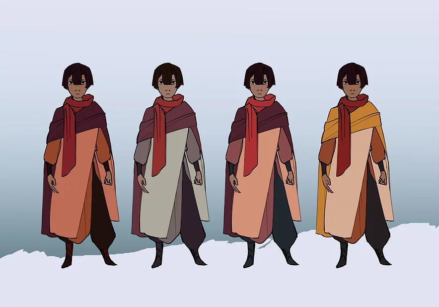
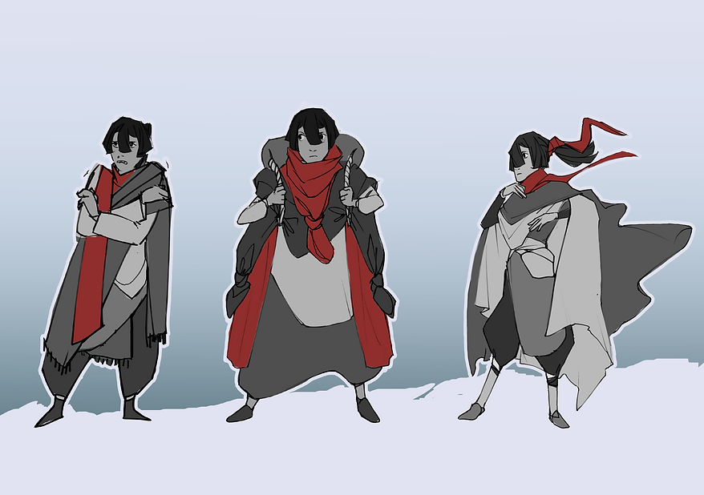
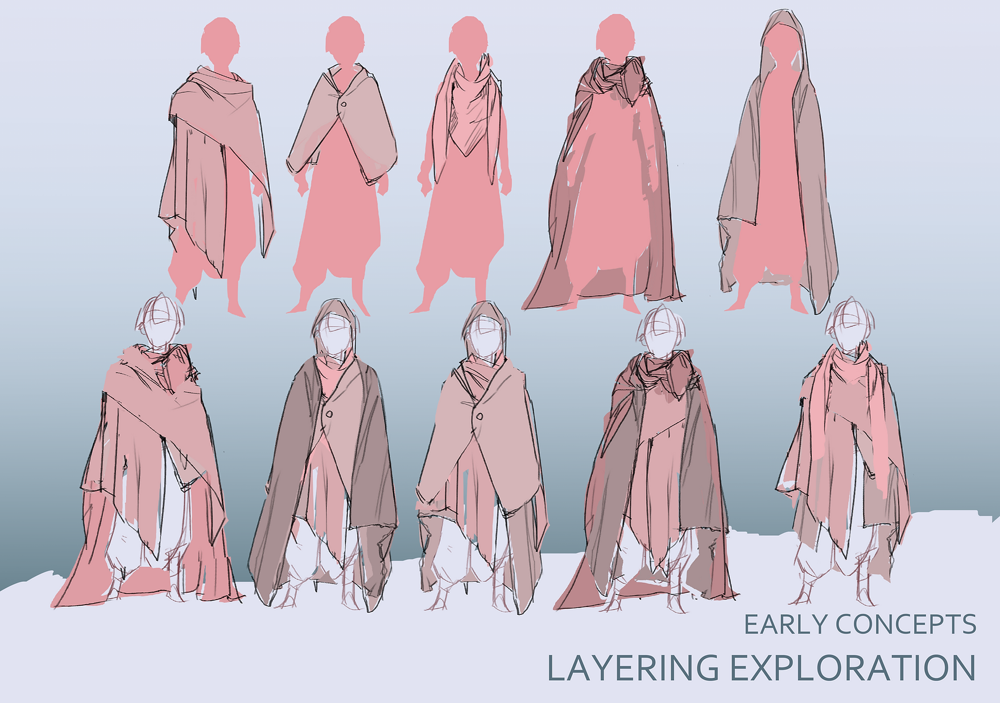
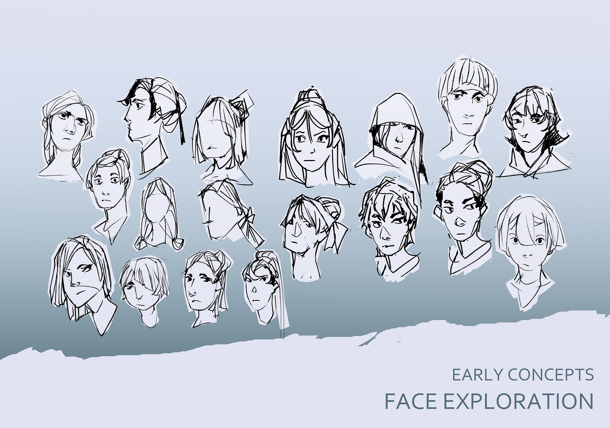

Journey to the Kingdom of Ice
An unprepared town distresses at a harsh and unexpected winter. Weeks pass with no signs of the cold relenting, and one boy resolves to find an end: to traverse the inhospitable mountaintops to a frozen kingdom and demand a cure from its equally frozen ruler.
A personal character design/vis dev project.



A key aspect of this design was the concept of dressing for a cold climate through bundling up and layering fabric/cloth as opposed to normal winter gear. The character's home is warm, and most are not in proper supply of clothing to combat the unexpected winter. Blankets and textiles and whatever is available will have to suffice, layered to keep as warm as possible.
